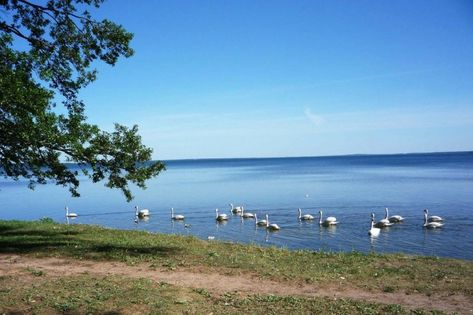

| Главная | Софийский собор | Озеро Нарочь | Борисоглебская церковь | Брестская крепость | Мирский замок | Беловежская пуща | Несвижский замок |
|---|
Нарочь — самое большое озеро в Белоруссии[7]. Площадь его зеркала — 79,6 км². Наибольшая глубина — 24,8 м. Длина наибольшего поперечника — 12,8 км. Длина береговой линии — 40 км (четвёртое место среди озёр Белоруссии[7]). Объём воды — 710 млн м³ (первое место среди озёр Белоруссии[7]). Площадь водосбора — 199 км². Площадь поверхности — 79,62 км². Высота над уровнем моря — 165 м. Всего в озеро впадает шестнадцать ручьёв, помимо них с восточной стороны в Нарочь впадает проток Скема из озера Мястро, а с юго-восточной — вытекает река Нарочь[2][1]. На берегу озера расположены населённые пункты: куртный посёлок Нарочь, деревни: Антонисберг, Симоны, Черевки, Пасынки, Никольцы, Гатовичи, Занарочь, Зубренёвка, Боровые, Наносы, Степенёво[4]. Имеются многочисленные санатории, старейший из них санаторий «Нарочь» (1963)[8], детский центр «Зубрёнок».